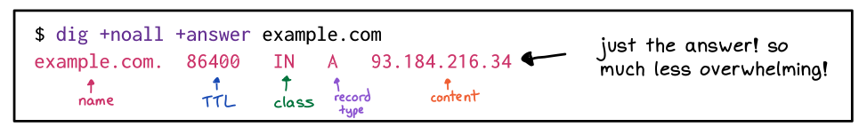

In A Nutshell, What Does It Mean For A Lowly SysAdmin?
If you want to associate an IP address to a URL, it usually costs
$$.
We can choose to set up a private DNS server for internal
use, meaning we can associate private IP addresses with
URLs.
For this course, you will use the Bindistrar credentials I emailed
you earlier in the semester.
CLI Tools
There are several tools demonstrated in the lab, but let’s focus on
dig.
The full output can tell you if there was an error, but you can also
simplify the response:

easy-dig
DNS Records
A:: translates URL to IPv4.
AAAA:: translates URL to IPv6.
CNAME:: translates URL to another domain name.
In other words, redirects a URL request to another URL.
Fixing Nextcloud
Read the error message carefully.
Read the error message carefully
always!!
There is a php file, so do you open it from the browser?
No, use vim.
Omit the ‘www’ from the beginning of the domain (or don’t, you’ll
see the difference at the end).
What Is Encryption?
A: Take data, convert it into junk that can’t be
understood. In a way that can be converted back into
data, but only by certain people you trust!
abc 👉 xnc
The pointing hand implies a key, some algorithm that can
convert sense into nonsense, and back
again, in a way that can’t be understood by an outside
observer.
Symmetric Encryption
An example would be a Caesar Cypher, basically the algorithm
is ‘every character gets turned into the next letter’.
cat 👉 ‘dbu’
the key to decrypt is just the inverse of the key
to encrypt.
this code is cracked by third-graders for fun. So
it’s not secure.
Asymmetric Encryption
Instead of one key, there are two.
One key encrypts, to other decrypts.
This makes more interesting things possible!
Encrypting With A Public Key
One key becomes my public key. I give this to Bob.
One key becomes my private key. I keep this one safe.
Anyone can lock messages, but I’m the only one who can
unlock it.
Therefore: people can be confident only I am able to read the
message.